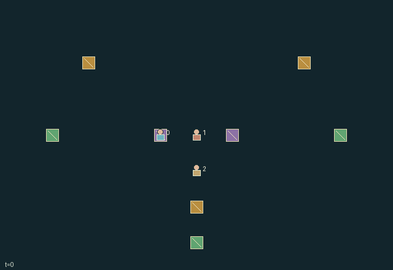

GI172 · Signal Bargain

Original recording scope: 角色视角 · Mode: 固定脚本演示
Additional generated state replay (different trajectory / full-state debug)

Collect complementary goods, explicitly exchange them through spatial escrow contracts, and deliver up to two private recipes at own home before the role deadline.
Identity and original contract
3 independently actionable roles; 44 discrete commands per role; 108 native observation columns per role; original horizon 60 steps. Declared per-step reward range: -4 to 18. Observation regime: partially_observable.
Source SHA-256: 7b0eb2315ec282a474a6accdf6d80c755497215702adc2d981780852fa0c66a5
The objective, rewards, population, map and horizon remain original. A preview is not a success claim.
Objective and gameplay
Collect complementary goods, explicitly exchange them through spatial escrow contracts, and deliver up to two private recipes at own home before the role deadline.
Private recipes, finite stock, one-unit escrow, explicit accept/reject/cancel, expiry, local costly signals and meeting geometry alter peer resources and feasible deliveries.
- Three finite commodities supply private three-good recipes. Free inventory plus escrow capacity is four.
- Create one-for-one addressed offers while adjacent and sharing a market neighborhood. A real unit enters escrow.
- Expiry rejection and cancellation precede acceptance. Settlement requires both endpoints near stored offer location and adjacent after movement.
- TTL starts at five; old TTL one expires before acceptance. New offers cannot settle that same transition.
- Signals cost one reward and one of three tokens; roles within radius three receive chosen content, which may be a bluff.
- Own-home delivery pays eighteen. Deadlines 42,48,54 deactivate unfinished traders with a three-point penalty.
Ending: All roles finish two deliveries or reach deadlines 42,48,54; upper horizon 60. Inactive roles retain wait only.
What this game explores
Information, sensing & communication: Who knows a fact, when it was measured, and whether it was communicated are separate state variables. Test memory or communication using only the same role-visible evidence.
Commitment, exchange & governance: Promises consume time, liquidity, access or material. Separate an announced agreement from a binding commitment and from its eventual delivery; log cancellation and expiry too.
Complementary production & service: A useful outcome requires ordered stages, scarce equipment or another role's capability. Measure real completed products and resource circulation rather than counting intermediate actions as success.
Joint transport & shared access: Positions, load geometry, occupancy and persistent access constrain whose action can succeed next. Distinguish physical handoff, shared controls and simultaneous force from a cosmetic cooperation label.
These are questions supported by rule structure, not observed learning effects.
Play it: operating walkthrough
crucibles play --game gi172Keep Python running and open its printed address. Select this game, set a seed and press Create session. The game itself is always English.
Assign a role range to Host with Assign / take over, or Assign all roles. Invite a second participant with Create player invitation, then assign a disjoint subset. Every original role is available.
For every owned role choose a legal command and press Queue. Arrow keys / WASD queue a declared directional action for the current role camera when available. Space or Advance one joint step advances everyone together. Non-directional games use the selectors.
Unqueued roles use the labelled untrained uniform-legal policy. Take over or release roles before the next step without resetting. Full-state debug is privileged and permanently logged; role cameras preserve permissions. Close the session to retain logs. Server restart does not restore sessions.
Complete command reference
IDs and English labels exactly match the manifest. Availability depends on role, resources, location and phase. An available action can still have no productive effect.
0·Wait
1·Move north
2·Move east
3·Move south
4·Move west
5·Harvest one good at its finite source
6·Deliver private recipe at own home
7·Signal interest in commodity 0; costly and not truth-constrained
8·Signal interest in commodity 1; costly and not truth-constrained
9·Signal interest in commodity 2; costly and not truth-constrained
10·Cancel own pending offer
11·Accept proposer 0
12·Accept proposer 1
13·Accept proposer 2
14·Reject proposer 0
15·Reject proposer 1
16·Reject proposer 2
17·Offer trader 0: escrow commodity 0 for commodity 0
18·Offer trader 0: escrow commodity 0 for commodity 1
19·Offer trader 0: escrow commodity 0 for commodity 2
20·Offer trader 0: escrow commodity 1 for commodity 0
21·Offer trader 0: escrow commodity 1 for commodity 1
22·Offer trader 0: escrow commodity 1 for commodity 2
23·Offer trader 0: escrow commodity 2 for commodity 0
24·Offer trader 0: escrow commodity 2 for commodity 1
25·Offer trader 0: escrow commodity 2 for commodity 2
26·Offer trader 1: escrow commodity 0 for commodity 0
27·Offer trader 1: escrow commodity 0 for commodity 1
28·Offer trader 1: escrow commodity 0 for commodity 2
29·Offer trader 1: escrow commodity 1 for commodity 0
30·Offer trader 1: escrow commodity 1 for commodity 1
31·Offer trader 1: escrow commodity 1 for commodity 2
32·Offer trader 1: escrow commodity 2 for commodity 0
33·Offer trader 1: escrow commodity 2 for commodity 1
34·Offer trader 1: escrow commodity 2 for commodity 2
35·Offer trader 2: escrow commodity 0 for commodity 0
36·Offer trader 2: escrow commodity 0 for commodity 1
37·Offer trader 2: escrow commodity 0 for commodity 2
38·Offer trader 2: escrow commodity 1 for commodity 0
39·Offer trader 2: escrow commodity 1 for commodity 1
40·Offer trader 2: escrow commodity 1 for commodity 2
41·Offer trader 2: escrow commodity 2 for commodity 0
42·Offer trader 2: escrow commodity 2 for commodity 1
43·Offer trader 2: escrow commodity 2 for commodity 2
Roles and capability identifiers
These original role names describe capabilities, not interchangeable skins. Check each owned role's legal selector before planning handoffs.
agent_0·Trader 0: initial commodity 0, private recipe
agent_1·Trader 1: initial commodity 1, private recipe
agent_2·Trader 2: initial commodity 2, private recipe
Information and observation permissions
Recipes and signal budgets are private. Nearby inventories and positions require radius two; source locations public but stock local. Offer terms are addressed. Only roles near a signal emission retain its content and frozen origin. Settlement/cancellation identities and delivery counts are public.
The GIF is full-state debug and may reveal hidden entities or private state. Train on obs[agent], not the picture, state tree or another role's private row. Field slices and visibility are in the original manifest.
Reinforcement-learning integration
import jax
from crucibles_jaxmarl import make
env = make("gi172")
key = jax.random.PRNGKey(0)
key, rk, ak, sk = jax.random.split(key, 4)
obs, state = jax.jit(env.reset)(rk)
actions = env.sample_actions(ak, state)
obs, state, rewards, dones, info = jax.jit(env.step_env)(sk, state, actions)
done = dones["__all__"]Observations are float32 vectors of width 108; actions are scalar int32; masks have 44 entries. Supply all 3 roles each transition. Masked sampling is an engineering reference, not a trained learner.
step_env retains terminal data without reset. step performs outer autoreset and keeps terminal data in info["raw_state"] and info["raw_observation"]. Use dones["__all__"] for episode boundaries; separate completion, failure and time limit in analysis.
JIT or vmap equal identities and shapes. Split independent reset, policy and transition keys. Group different shapes explicitly; do not shrink the population or horizon. Host rendering stays outside training.
Training questions and fair evaluation
Define valid completion from the objective before fitting. Preserve original rewards and also report real deliveries/services, losses, resource state, unresolved episodes and per-role returns. Animation is not a reward signal.
Who knows a fact, when it was measured, and whether it was communicated are separate state variables. Test memory or communication using only the same role-visible evidence.
Promises consume time, liquidity, access or material. Separate an announced agreement from a binding commitment and from its eventual delivery; log cancellation and expiry too.
A useful outcome requires ordered stages, scarce equipment or another role's capability. Measure real completed products and resource circulation rather than counting intermediate actions as success.
Positions, load geometry, occupancy and persistent access constrain whose action can succeed next. Distinguish physical handoff, shared controls and simultaneous force from a cosmetic cooperation label.
Compare memory, communication or centralized critics under matched actor information. Declare critic access; keep actor inputs role-filtered. Match partner/opponent distributions, masks, compute and checkpoint selection. Final tests never enter fitting or selection.
Independent training runs or source-pairing blocks are inferential units; episodes from one policy are not independent training replications. Save hashes, keys, versions, device, time and cost. Negative, zero, failed and indeterminate outcomes are valid. No trained checkpoint or target score is supplied.
Classification and evidence
Overlapping editorial labels are reading aids, not proof of novelty, difficulty, strategic equivalence or learning effects.
- Information, sensing & communication
- Evidence
manifest.task.objective: Collect complementary goods, explicitly exchange them through spatial escrow contracts, and deliver up to two private recipes at own home before the role deadline.
- Evidence
manifest.task.interaction: Private recipes, finite stock, one-unit escrow, explicit accept/reject/cancel, expiry, local costly signals and meeting geometry alter peer resources and feasible deliveries.
- Evidence
manifest.task.observation_access: Recipes and signal budgets are private. Nearby inventories and positions require radius two; source locations public but stock local. Offer terms are addressed. Only roles near a signal emission retain its content and frozen origin. Settlement/cancellation identities and delivery counts are public.
- Commitment, exchange & governance
- Evidence
manifest.task.objective: Collect complementary goods, explicitly exchange them through spatial escrow contracts, and deliver up to two private recipes at own home before the role deadline.
- Evidence
manifest.task.interaction: Private recipes, finite stock, one-unit escrow, explicit accept/reject/cancel, expiry, local costly signals and meeting geometry alter peer resources and feasible deliveries.
- Evidence
manifest.task.observation_access: Recipes and signal budgets are private. Nearby inventories and positions require radius two; source locations public but stock local. Offer terms are addressed. Only roles near a signal emission retain its content and frozen origin. Settlement/cancellation identities and delivery counts are public.
- Complementary production & service
- Evidence
manifest.task.objective: Collect complementary goods, explicitly exchange them through spatial escrow contracts, and deliver up to two private recipes at own home before the role deadline.
- Evidence
manifest.task.interaction: Private recipes, finite stock, one-unit escrow, explicit accept/reject/cancel, expiry, local costly signals and meeting geometry alter peer resources and feasible deliveries.
- Evidence
manifest.task.observation_access: Recipes and signal budgets are private. Nearby inventories and positions require radius two; source locations public but stock local. Offer terms are addressed. Only roles near a signal emission retain its content and frozen origin. Settlement/cancellation identities and delivery counts are public.
- Joint transport & shared access
- Evidence
manifest.task.objective: Collect complementary goods, explicitly exchange them through spatial escrow contracts, and deliver up to two private recipes at own home before the role deadline.
- Evidence
manifest.task.interaction: Private recipes, finite stock, one-unit escrow, explicit accept/reject/cancel, expiry, local costly signals and meeting geometry alter peer resources and feasible deliveries.
- Evidence
manifest.task.observation_access: Recipes and signal budgets are private. Nearby inventories and positions require radius two; source locations public but stock local. Offer terms are addressed. Only roles near a signal emission retain its content and frozen origin. Settlement/cancellation identities and delivery counts are public.
Source, receipts and preview limits
The additional generated state GIF replays saved untrained legal actions through the original kernel. At most 25 actual endpoints include initial and terminal state; no invented interpolation. It is full-state debug, not the role observation. Where an original scene preview exists, it is displayed first with its own recorded information scope. The two recordings may use different trajectories and views.
Original source, observation slices, manifest and mechanism
Native receipt · Presentation receipt
Engineering passes do not establish learning. Nonzero floating differences remain recorded and undetermined; no new tolerance was introduced. Human scores remain unverified.